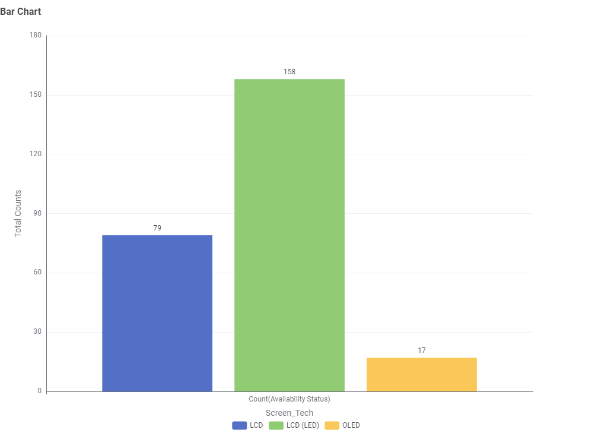
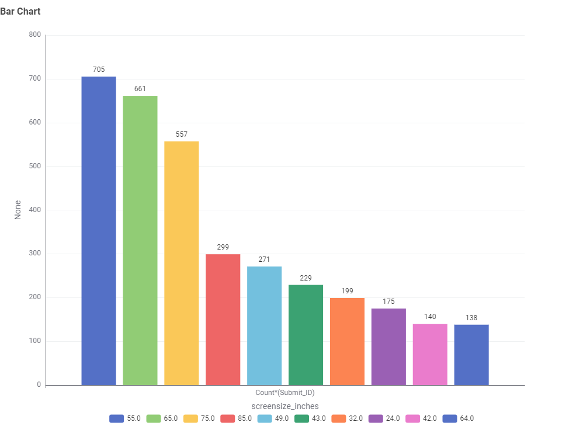
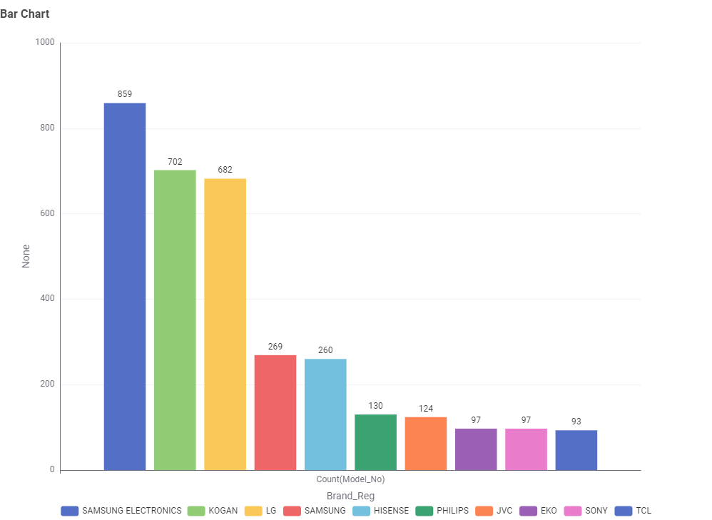
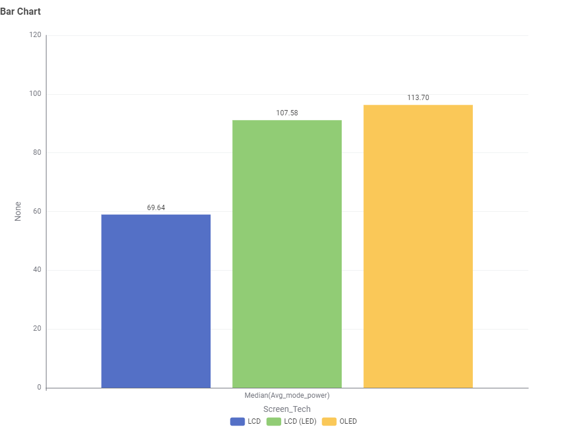
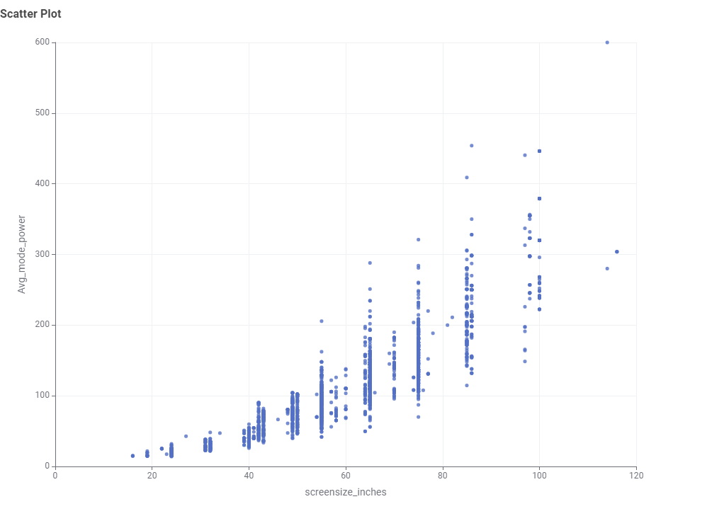
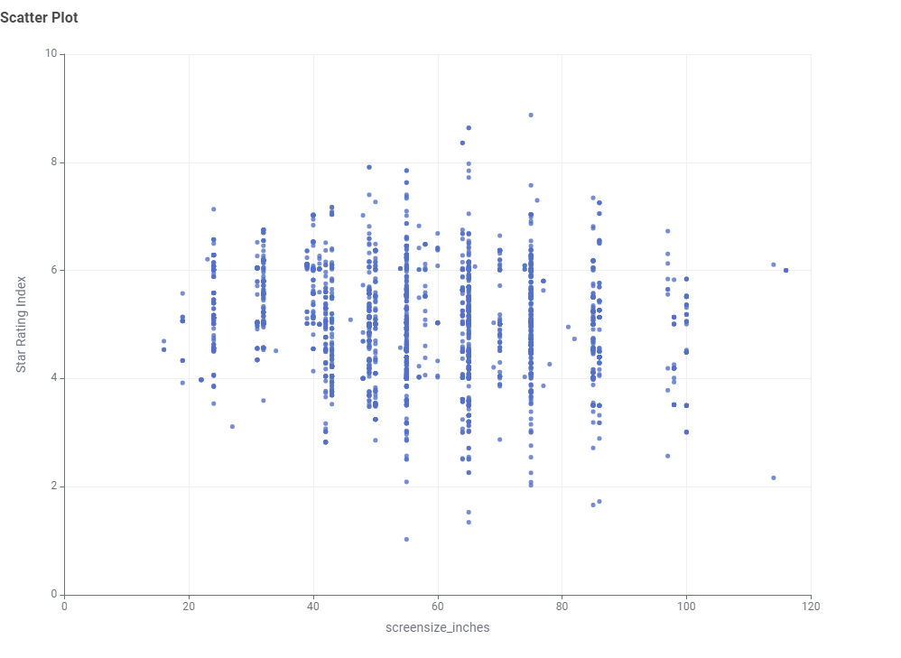

TV Energy Consumption in Australia
LCD vs LED vs OLED
LCD TVs: Traditional technology, typically 80-200W consumption
LED TVs: More efficient, usually 30-150W depending on size
OLED TVs: Variable consumption, 50-180W based on content brightness
Size Impact on Energy Use
- 32" TV: 30-80W average consumption
- 43" TV: 60-120W average consumption
- 55" TV: 90-150W average consumption
- 65" TV: 120-200W average consumption
- 75"+ TV: 180-300W average consumption
Annual Running Costs
Based on Australian average electricity prices (≈30c/kWh) and 5 hours daily use:
Energy Star 6+ TV: $40-80 per year
Energy Star 3-5 TV: $80-150 per year
Energy Star 1-2 TV: $150-300 per year
TV Energy Insights: Data Story
This section presents findings from the Australian Government's Television Energy Rating dataset. The aim is to help Australian consumers make informed decisions about technology, size, brand, and efficiency.
Chart 1: What TV technologies are most common?
Most TVs in Australia are LCD (LED), while OLED is less common.
Chart 2: What screen sizes are most frequent?
55-inch is the most common size, followed by mid-range sizes around 42-50 inches.
Chart 3: Which brands dominate the market?
SAMSUNG, KOGAN, and LG dominate the market with the largest number of models.
Chart 4: Which screen type uses the least power?
LCD TVs consume the least power, while OLED uses slightly more.
Chart 5: What is the relationship between screen size and power use?
Larger TVs use more power.
Chart 6: What is the relationship between star rating and screen size?
Star ratings are fairly distributed; bigger TVs can still be efficient
Conclusion
When choosing a TV, balance size, brand, and efficiency. A 55-inch LED TV is common and energy-smart for most households.